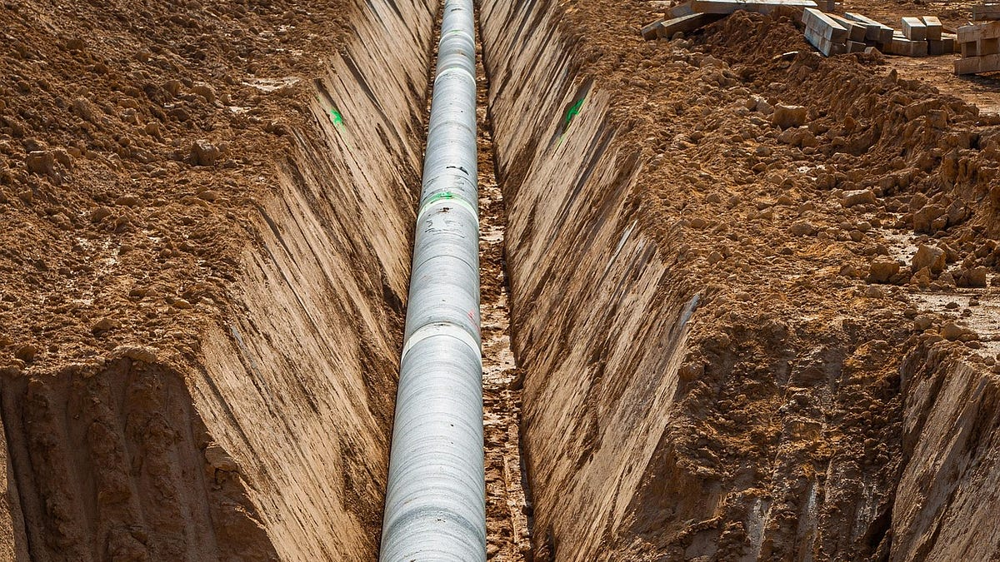
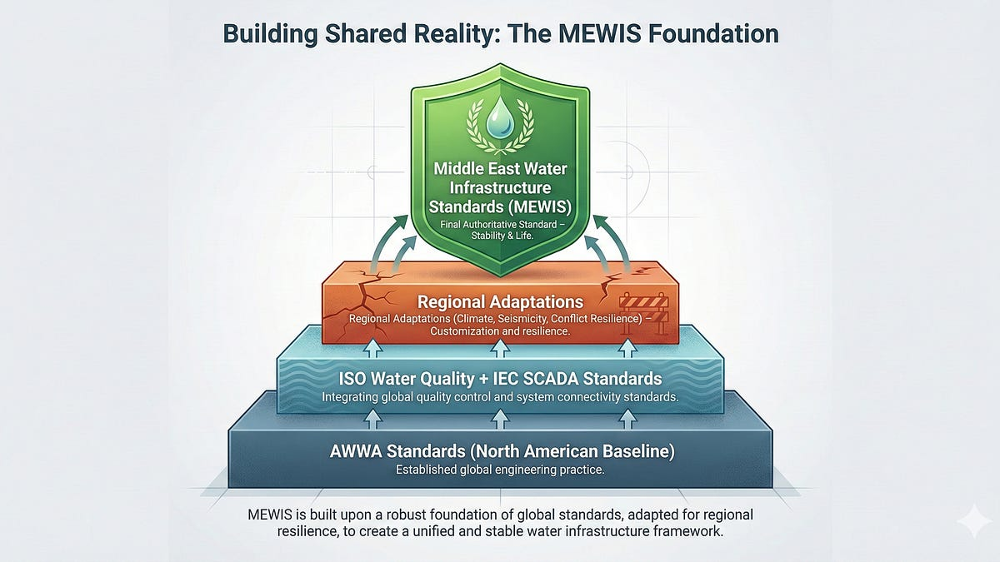
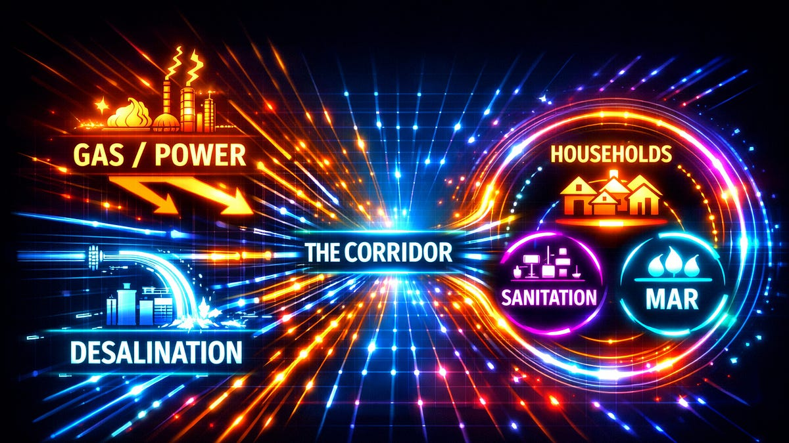
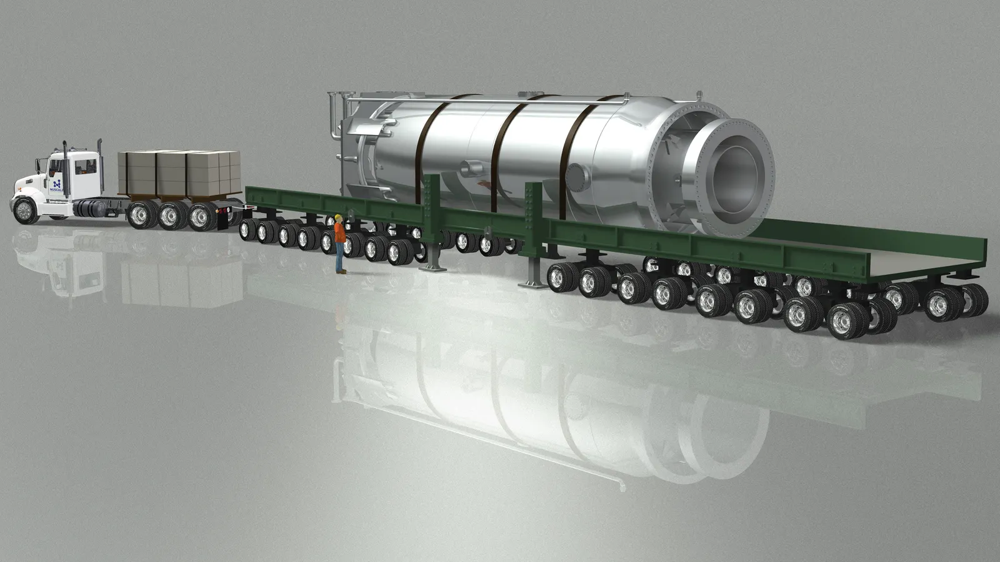
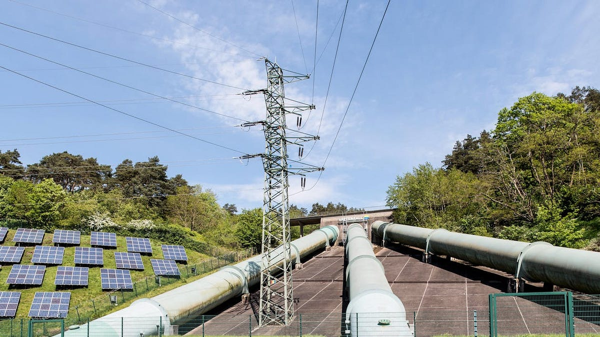
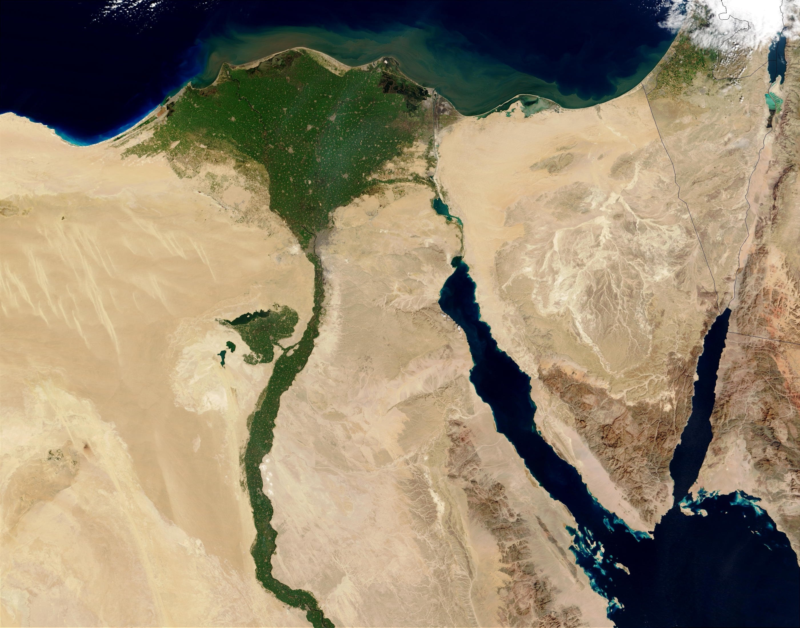

Water
 Part I — Middle East Water Resilience Plan: Foundation and Recovery
Part I — Middle East Water Resilience Plan: Foundation and RecoveryPart 1 · November 12, 2025 · This essay outlines an engineering-oriented resilience framework for addressing water scarcity in the Middle East. It emphasizes minimizing waste, treating wastewater as a resource, and establishing basic infrastructure…

Part II – Replumbing the Region: The Last MilePart 2 · November 18, 2025 · Dignity begins at the tap, not the treatment plant

Part III – Water Neutrality and Governance Substrate: Building Civilization's FoundationPart 3 · November 26, 2025 · How to create the legal, financial, and technical framework that makes permanent water infrastructure possible in ungoverned spaces
 Part IV – Conflicts in Asia's Watersheds: The Battle for Cross-Border Rivers
Part IV – Conflicts in Asia's Watersheds: The Battle for Cross-Border RiversPart 4 · December 14, 2025 · Geopolitical realities impacting water and plumbing reliability
- Part V: Triage — The Engineering of Survival
Part 5 · January 11, 2026 · THE WATER WARS ARE HERE: Why $2.1B Can Save 168,000 Children Annually in the World's 6 Deadliest Watersheds
- Part VI — Sensitivity, Velocity, and the Cost of Delay
Part 6 · January 27, 2026 · Stress-testing allocation logic under real-world deployment constraints

Part VII – Integrated Infrastructure Surge for Middle East Water ResiliencePart 7 · February 3, 2026 · Subtitle: A rapid, integrated infrastructure surge to deliver more water across the Middle East’s most stressed watersheds.

Part VIII – The Global Water Engineering Surge: A Six-Continent MobilizationPart 8 · February 11, 2026 · Part VIII: The Replication Question If the Jordan-Euphrates-Nile corridors work, they become the template. If they don't, the global conversation is irrelevant. This is not a plan to save the world. It's a plan to prove…

Part IX: The Global Water–Energy–Transport Corridors (GWETC)Part 9 · May 12, 2026 · Part IX: The Global Water–Energy–Transport Corridors (GWETC) Five Revenue Streams. One Right-of-Way. Water Pays for Itself.

The Aquifer Restoration ManifestoManifesto · May 14, 2026 · Groundwater collapse is not a resource problem. It is a system design problem.
 One Year at a Time
One Year at a TimeApril 25, 2026 · The Colorado River is being managed in twelve-month survival increments. That is not a water policy. That is a confession.